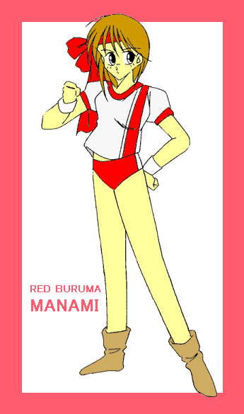

戻る
作：よっすぃー

学園戦士・レッドブルマー ＶＯＬ１ （まぬけ獣 農林１号登場）
学園戦士・レッドブルマー ＶＯＬ２ （まぬけ獣 鳳瑞６号登場）
学園戦士・レッドブルマー ＶＯＬ３ （まぬけ獣 あずさ２号登場）
学園戦士・レッドブルマー ＶＯＬ４ （まぬけ獣 コント５５号登場）
学園戦士・レッドブルマー ＶＯＬ５ （まぬけ獣 ニセブルマー登場）
学園戦士・レッドブルマー ＶＯＬ６ （？？？登場）
番外其の一 紅き血の伝説
番外其の二 五郎と『五郎』『愛美』と愛美
番外編 私たちをスキーに連れてって♪